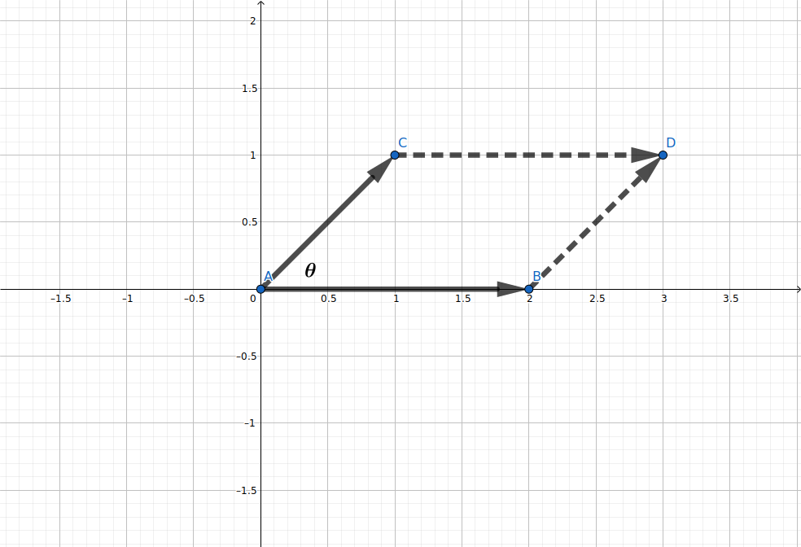

前言
本文讲解向量的向量积与混合积，并通过编程实现它们。
向量的向量积
两个向量的向量积（英语: Outer Products）向量空间中向量的二元运算。与数量积（点积）不同，向量积的运算结果是一个向量而不是一个标量，记作两向量叉乘，向量积所得向量的模长为：原向量模长乘积乘以原向量夹角的正弦值，方向与两个原向量都垂直。
向量向量积的几何意义可以理解为：由两向量为邻边构建的平行四边形的面积。

图1: 向量积的几何意义
从向量向量积的几何意义出发，计算向量积会比较繁琐。我们引入三维直角坐标系（这里我们只考虑三维向量，不考虑高维$(n-1)$向量），使用三阶行列式来求解向量积。
$$ \overrightarrow{a} = \begin{bmatrix} a_{x} \\ a_{y} \\ a_{z} \end{bmatrix} = a_{x} \cdot \overrightarrow{i} + a_{y} \cdot \overrightarrow{j} + a_{z} \cdot \overrightarrow{k} $$ $$ \overrightarrow{b} = \begin{bmatrix} b_{x} \\ b_{y} \\ b_{z} \end{bmatrix} = b_{x} \cdot \overrightarrow{i} + b_{y} \cdot \overrightarrow{j} + b_{z} \cdot \overrightarrow{k} $$则这两枚向量的向量积为（这里将下标换成了数字，更加清晰）:
$$ \begin{align} \overrightarrow{v} = \overrightarrow{a} \times \overrightarrow{b} &= \begin{vmatrix} \overrightarrow{i} & \overrightarrow{j} & \overrightarrow{k} \\ a_{1} & a_{2} & a_{3} \\ b_{1} & b_{2} & b_{3} \end{vmatrix} \\ &= \overrightarrow{i} \cdot \begin{vmatrix} a_{2} & a_{3} \\ b_{2} & b_{3} \end{vmatrix} - \overrightarrow{j} \cdot \begin{vmatrix} a_{1} & a_{3} \\ b_{1} & b_{3} \end{vmatrix} + \overrightarrow{k} \cdot \begin{vmatrix} a_{1} & a_{2} \\ b_{1} & b_{2} \end{vmatrix} \\ &= \overrightarrow{i} \cdot (a_{2} \cdot b_{3} - a_{3} \cdot b_{2}) - \overrightarrow{j} \cdot (a_{1} \cdot b_{3} - a_{3} \cdot b_{1}) + \overrightarrow{k} \cdot (a_{1} \cdot b_{2} - a_{2} \cdot b_{1}) \end{align} $$向量的混合积
向量的混合积是由向量的数量积与向量积一起运算得到的。向量的混合积由一枚向量先与另一枚向量做叉乘，得到的向量积再与一枚向量做点乘，所以向量混合积最终结果是一个标量。我们可以列出一个三阶行列式来快速求解向量的混合积。
$$ n = (\overrightarrow{a} \times \overrightarrow{b}) \cdot \overrightarrow{c} = \begin{vmatrix} a_{x} & a_{y} & a_{z} \\ b_{x} & b_{y} & b_{z} \\ c_{x} & c_{y} & c_{z} \end{vmatrix} $$向量积与混合积的编程实现
在了解了向量向量积的基本概念后，我们考虑它的编程实现。我们来为向量类添加一个求向量积的方法。
根据向量积的定义及其三阶行列式求法，我们可以很容易地实现求向量积：取出两枚向量三个维度的坐标数值，按照行列式展开运算得出向量积的坐标，构建向量返回即可。
...
def cross(self, v):
try:
x1, y1, z1 = self.coordinates
x2, y2, z2 = v.coordinates
return Vector([
y1 * z2 - y2 * z1,
-(x1 * z2 - x2 * z1),
x1 * y2 - x2 * y1
])
except:
print("Something error")
return None
...
代码清单1: 向量积的代码实现（Python）
向量的混合积是由向量的数量积与向量分一起运算得到的。我们没有必要单独写一个求混合积的方法，完全可以由已经实现的数量积与向量积来得混合积。
...
def vector_mixed(m, v, w):
return m.cross(v).dot(w)
...
代码清单2: 混合积的代码实现（Python）
接下来，我们来写求由两枚向量所构建的图形面积（三角形与平行四边形）的代码实现。
...
def area_of_parallelogram_with(self, v):
return self.cross(v).magnitude()
def area_of_triangle_with(self, v):
return self.area_of_parallelogram_with(v) / 2.0
...
代码清单3: 向量构成图形面积的代码实现（Python）
我们来写一些测试代码，看看我们新添加的方法是否可用。
def vector_cross_test():
print(Vector([1, 1, 0]).cross(Vector([2, 0, 0])).magnitude())
print(Vector([1, 1, 0]).area_of_parallelogram_with(Vector([2, 0, 0])))
print(Vector([1, 1, 0]).area_of_triangle_with(Vector([2, 0, 0])))
代码清单4: 相关测试代码（Python）
参考资料
- 同济高等数学（第7版）下册, P17 - P22